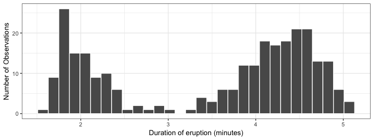
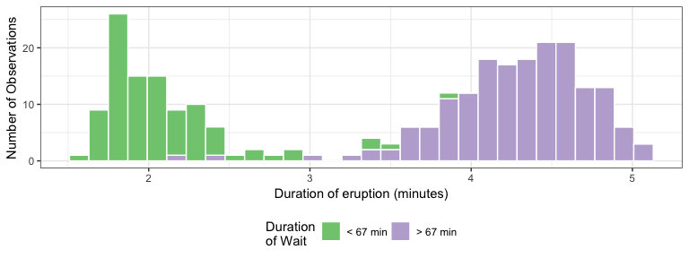
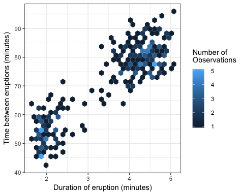

“There are no routine statistical questions, only questionable statistical routines.”
— Sir David Cox
“Far better an approximate answer to the right question, which is often vague, than an exact answer to the wrong question, which can always be made precise.”
— John Tukey
EDA is fundamentally a creative process. And like most creative processes, the key to asking quality questions is to generate a large quantity of questions.

case_when()case_when() is particularly useful inside mutate when you want to create a new variable that relies on a complex combination of existing variables. Write a short sentence that says what this code is doing?
starwars %>%
select(name:mass, gender, species) %>%
mutate(
type = case_when(
height > 200 | mass > 200 ~ "large",
species == "Droid" ~ "robot",
TRUE ~ "other"
)
)
#> # A tibble: 87 x 6
#> name height mass gender species type
#> <chr> <int> <dbl> <chr> <chr> <chr>
#> 1 Luke Skywalker 172 77 male Human other
#> 2 C-3PO 167 75 <NA> Droid robot
#> 3 R2-D2 96 32 <NA> Droid robot
#> 4 Darth Vader 202 136 male Human large

{kind=link}